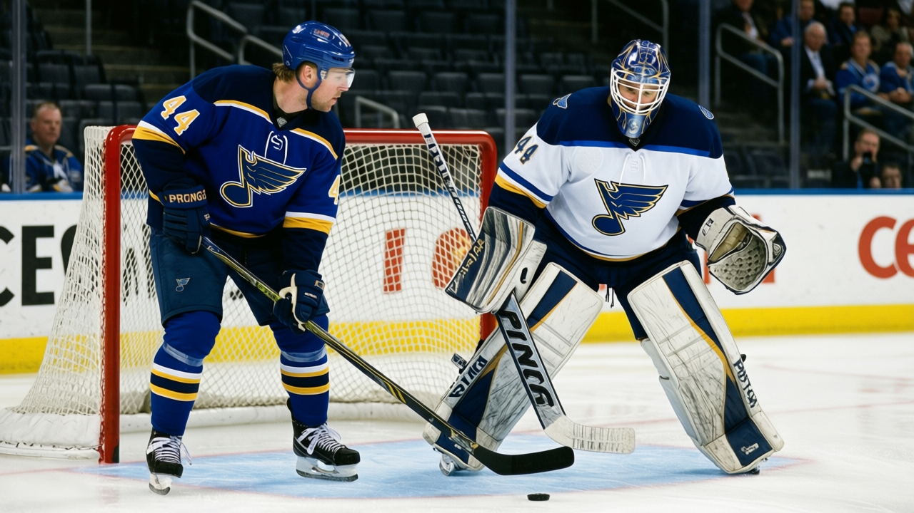

RUMOR METER: The League's Most Expensive Expiring Deal Sits on an 8-17-2 Team 🔥🔥
Chris Pronger earns $9.50M with one year left in St. Louis. The Blues signed a depth center for $479,200 on Monday. The direction of travel is obvious.
 E.J. "Ears" CallahanInsider · The Hot Stove
E.J. "Ears" CallahanInsider · The Hot Stove

STL believed to be listening on Pronger and Osgood

 Chris Pronger80 is the most expensive player on an expiring contract in the league. $9.50M, one year left, 86 overall, 21 points in 31 games for a
Chris Pronger80 is the most expensive player on an expiring contract in the league. $9.50M, one year left, 86 overall, 21 points in 31 games for a  St. Louis Blues club that has 26 points and sits fourth in the Central Division at 8-17-2.
St. Louis Blues club that has 26 points and sits fourth in the Central Division at 8-17-2.
On Monday, St. Louis signed Mike Danton for $479,200. A depth center on a bottom-six money contract. The Blues' payroll is $56.63M, and their cost per point is $2.18M. Third-worst in the league, behind only Philadelphia at $2.38M and Montreal at $2.22M.
You do not sign a $479,200 depth forward in December if you are planning to run back the same group in April. You sign him because you are clearing minutes for guys who will be in the building in 2005-06, and you are not paying them your highest salary.
League sources say Pronger's name has surfaced in conversations around the circuit. No trade has been filed. Supply side: $9.50M, expiring, 30 years old, 86 overall, a Norris-calibre defenceman on a team that has no business competing for anything this season.
The second expiring problem
 Chris Osgood78 sits at 78 on the Morale Scale. He is on an expiring $3.80M deal and has played 11 games. The Blues have
Chris Osgood78 sits at 78 on the Morale Scale. He is on an expiring $3.80M deal and has played 11 games. The Blues have  Brent Johnson79 at 85 overall and $0.60M in goal, and Johnson is also on the last year of his deal. Osgood is not going to be in St. Louis next season at $3.80M, and if the Blues can move him before the deadline they free a roster spot and shed a man whose Morale Scale tells you he's already gone.
Brent Johnson79 at 85 overall and $0.60M in goal, and Johnson is also on the last year of his deal. Osgood is not going to be in St. Louis next season at $3.80M, and if the Blues can move him before the deadline they free a roster spot and shed a man whose Morale Scale tells you he's already gone.
That is $9.50M and $3.80M in expiring salary on the third-worst cost-per-point team in the league. The question for buyers is whether they can absorb $9.50M and still have room for the forward depth a Norris-level defenceman needs to matter in April.
St. Louis holds 1 first-round pick in 2005. If they move Pronger they should add a second. A club with no Cups, a last-playoff run of 0 games, and attendance at 14,043 per game is not in a window.
The Danton signing was the tell. You do not spend $479,200 on a depth center in the same month your captain-of-the-blueline walks his last season if you believe in this February.